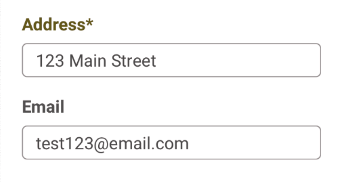
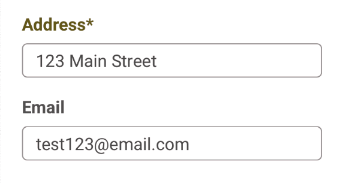

Web Accessibility
& Why You Should Care
By Melvin Chen


By Melvin Chen
Web accessibility refers to ensuring that users can access and use the services provided by a website, regardless of disability. In other words, it is a set of guidelines that websites must follow to make sure everyone can use their site.
The web accessibility guidlines account for those that are visually impaired (those that use screen readers or color deficiencies), those that are hearing impaired (cannot access audio or video content), and those without fine motor coordination.
Besides being inconsiderate to all audiences, disregarding web accessibility has legal repercussions. Violating Americans with Disability Act requirements can cost companies thousands to millions of dollars worth of lawsuits. In 2008, Target was sued by the National Federation of the Blind with over $6 million worth of class damages and plaintiff legal fees over $3 million.
In addition to its legality, having web accessible content drives more users or readers to websites. To put its issue into perspective, businesses can lose up to 4.5% (approximate percent of population that is colorblind) of their potential web traffic just by not accounting for color blindness.
There are more standards than the three on this list, but hitting these requirements is large step in the right direction. These are also requirements that can be noticed without knowing how to code
Many times, web designers and users without disabilities forget that not everyone sees colors the same way. Thus, just differentiating certain objects in web pages with colors can be extremely difficult for certain users.
A better solution involves designing with non-color differentiators. For example, in forms with requirements, a web designer could differentiate required fields with an asterisk instead of just color.
Left: seeing these buttons with normal vision
Right: seeing these buttons with Red-Blind (Protanopia)
 

The asterisk helps to differentiate required text fields from those that are not required
Confirmation and cancellation buttons are also important as they are often only differentiated with red and green.
Left: seeing these buttons with normal vision
Right: seeing these buttons with Red-Blind (Protanopia)
A web designer could make one button a solid color and the other an outline to make one more prominent than the other.
The designer could take it a step further and add an icon that really differentiate the two.
Coloring also affects links. For example:
Left: seeing these buttons with normal vision
Right: seeing these buttons with Blue-Blind (Tritanopia)
Everyone has seen a link that has said “Click here”. These links usually come after normal text and work decently well for those with normal vision. However, screen readers users often skip from link to link and only have the text to read off of. This results in screen readers just reading “Click here” or “More information” without the links context.
A better solution would be writing a short description that provides context for the link.
For example:
To read more about WCAG link description guidelines, click here
Read more about WCAG link description guidelines